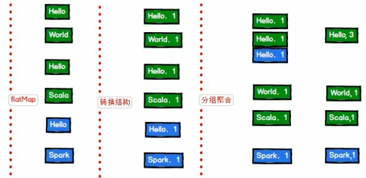

Spark
Spark 运行模式
Spark 安装地址
集群角色
- Master 和 Worker（若用Yarn，则未必会有）
（1）Master
Spark 特有资源调度系统的 Leader。掌管着整个集群的资源信息，类似于 Yarn 框架中的 ResourceManager，主要功能：
1）监听 Worker，看 Worker 是否正常工作；
2）Master 对 Worker、Application 等的管理(接收 Worker 的注册并管理所有的Worker，接收 Client 提交的 Application，调度等待的 Application 并向Worker 提交)。
（2）Worker
Spark 特有资源调度系统的 Slave，有多个。每个 Slave 掌管着所在节点的资源信息，类似于 Yarn 框架中的 NodeManager，主要功能：
1）通过 RegisterWorker 注册到 Master；
2）定时发送心跳给 Master；
3）根据 Master 发送的 Application 配置进程环境，并启动 ExecutorBackend(执行 Task 所需的临时进程)
- Driver和Executor
（1）Driver（驱动器）——管理
Spark 的驱动器是执行开发程序中的 main 方法的线程。
它负责开发人员编写的用来创建SparkContext、创建RDD，以及进行RDD的转化操作和行动操作代码的执行。如果你是用Spark Shell，那么当你启动Spark shell的时候，系统后台自启了一个Spark驱动器程序，就是在Spark shell中预加载的一个叫作 sc 的SparkContext对象。如果驱动器程序终止，那么Spark应用也就结束了。主要负责：
1）将用户程序转化为作业（Job）；
2）在Executor之间调度任务（Task）；
3）跟踪Executor的执行情况；通过UI展示查询运行情况。
（2）Executor（执行器）——计算
Spark Executor是一个工作节点，负责在 Spark 作业中运行任务，任务间相互独立。Spark 应用启动时，Executor 节点被同时启动，并且始终伴随着整个 Spark 应用的生命周期而存在。如果有Executor节点发生了故障或崩溃，Spark 应用也可以继续执行，会将出错节点上的任务调度到其他Executor节点上继续运行。主要负责：
1）运行组成 Spark 应用的任务，并将状态信息返回给驱动器程序；
2）通过自身的块管理器（Block Manager）为用户程序中要求缓存的RDD提供内存式存储。RDD是直接缓存在Executor内的，因此任务可以在运行时充分利用缓存数据加速运算。
Local 模式
概述
Local模式就是运行在一台计算机上的模式，通常就是用于在本机上练手和测试。它可以通过以下集中方式设置Master。
local: 所有计算都运行在一个线程当中，没有任何并行计算，通常我们在本机执行一些测试代码，或者练手，就用这种模式;
local[K]: 指定使用几个线程来运行计算，比如local[4]就是运行4个Worker线程。通常我们的Cpu有几个Core，就指定几个线程，最大化利用Cpu的计算能力;
local[*]: 这种模式直接帮你按照Cpu最多Cores来设置线程数了。
安装使用
1）上传并解压spark 安装包
[user_test@hadoop102 sorfware]$ tar -zxvf spark-2.1.1-binhadoop2.7.tgz -C /opt/module/
# 改名方便以后操作
[user_test@hadoop102 module]$ mv spark-2.1.1-bin-hadoop2.7 spark2）官方求PI（圆周率）案例
[user_test@hadoop102 spark]$ bin/spark-submit --class org.apache.spark.examples.SparkPi --executor-memory 1G --total-executor-cores 2 ./examples/jars/spark-examples_2.11-2.1.1.jar 100前面带”–”的参数，是可有可无的，可以互换位置的。
（1）基本语法
bin/spark-submit \
--class
--master \
--deploy-mode \
--conf = \
... # other options
\ （2）参数说明：
–master：指定Master 的地址，默认为Local
–class: 你的应用的启动类你的应用的启动类 (如如 org.apache.spark.examples.SparkPi)
–deploy-mode: 是否发布你的驱动到是否发布你的驱动到worker节点节点(cluster) 或者作为一个本地客户端或者作为一个本地客户端 (client) (default: client)*
–conf: 任意的任意的Spark配置属性配置属性，， 格式格式key=value. 如果值包含空格如果值包含空格，，可以加引号可以加引号“key=value”
application-jar: 打包好的应用打包好的应用jar,包含依赖包含依赖. 这个这个URL在集群中全局可见。在集群中全局可见。 比如比如hdfs:// 共享存储系统，共享存储系统， 如果是如果是 file:// path，， 那么所有的节点的那么所有的节点的path都包含同样的都包含同样的jar
application-arguments: 传给传给main()方法的参数方法的参数
–executor-memory 1G 指定每个指定每个executor可用内存为可用内存为1G
–total-executor-cores 2 指定每个指定每个executor使用的使用的cup核数为核数为2个个
3）结果展示
4）准备文件
[user_test@hadoop102 spark]$ mkdir input在input下创建2个文件1.txt和2.txt，并输入以下内容
[1.txt]
Hello World
Hello Scala[2.txt]
Hello BigData
Hello Spark5）启动spark-shell
[user_test@hadoop102 spark]$ bin/spark-shell 出现以下界面就说明环境成功了
开启另一个窗口
[user_test@hadoop102 spark]$ jps
——>
3627 SparkSubmit
4047 Jps可登录 http://hadoop102:4040 (hadoop102:4040) 查看程序运行，其中地址在3.png中可以看到
6）运行WordCount程序
分析

scala> sc.textFile("input").flatMap(_.split(" ")).map((_,1)).reduceByKey(_+_).collect
——>
res2: Array[(String, Int)] = Array((Hello,4), (World,1), (Scala,1), (BigData,1), (Spark,1))可登录hadoop102:4040查看程序运行
提交流程提交流程
1）提交任务分析：
Spark通用运行简易流程
重要角色：
Driver（驱动器）
Spark 的驱动器是执行开发程序中的main 方法的进程。它负责开发人员编写的用来创建SparkContext、创建RDD，以及进行RDD 的转化操作和行动操作代码的执行。如果你是用spark shell，那么当你启动Spark shell 的时候，系统后台自启了一个Spark 驱动器程序，就是在Spark shell 中预加载的一个叫作 sc 的SparkContext 对象。如果驱动器程序终止，那么Spark 应用也就结束了。主要负责：
1）把用户程序转为任务
2）跟踪Executor 的运行状况
3）为执行器节点调度任务
4）UI 展示应用运行状况
Executor（执行器）
Spark Executor 是一个工作进程，负责在 Spark 作业中运行任务，任务间相互独立。Spark 应用启动时，Executor 节点被同时启动，并且始终伴随着整个 Spark 应用的生命周期而存在。如果有Executor 节点发生了故障或崩溃，Spark 应用也可以继续执行，会将出错节点上的任务调度到其他Executor 节点上继续运行。主要负责：
1）负责运行组成 Spark 应用的任务，并将结果返回给驱动器进程；
2）通过自身的块管理器（Block Manager）为用户程序中要求缓存的RDD 提供内存式存储。RDD 是直接缓存在Executor 进程内的，因此任务可以在运行时充分利用缓存数据加速运算。
数据流程
textFile(“input”)：读取本地文件input 文件夹数据（按行读取）；
flatMap(_.split(“ “))：压平操作，按照空格分割符将一行数据映射成一个个单词；
map((_,1))：对每一个元素操作，将单词映射为元组；
reduceByKey(+)：按照key 将值进行聚合，相加；
collect：将数据收集到Driver 端展示。
WordCount案例分析
Standalone 模式
只用spark独立部署，不用其他的（资源调度也用spark，那么就没有RM和NM，相应替换成了master和worker）
概述
构建一个由Master+Slave 构成的Spark 集群，Spark 运行在集群中。
Master <——> ResourceManager
Worker <——> NodeManager
安装使用
1）进入spark 安装目录下的conf 文件夹
[user_test@hadoop102 module]$ cd spark/conf/2）修改配置文件名称
[user_test@hadoop102 conf]$ mv slaves.template slaves
# 若以下已经修改则不用重复修改
[user_test@hadoop102 conf]$ mv spark-env.sh.template spark-env.sh3）修改slave 文件，添加work 节点：
[user_test@hadoop102 conf]$ vim slaves添加以下内容
hadoop102
hadoop103
hadoop1044）修改spark-env.sh 文件，添加如下配置：
[user_test@hadoop102 conf]$ vim spark-env.sh写入以下内容
SPARK_MASTER_HOST=hadoop102
SPARK_MASTER_PORT=70775）分发spark 包
[user_test@hadoop102 module]$ xsync spark/6）启动
[user_test@hadoop102 spark]$ sbin/start-all.sh可执行jps来进行查看
网页查看：
hadoop102:8080
注意：如果遇到 “JAVA_HOME not set” 异常 可以在 sbin目录下的 spark-config.sh 文件中加入如下配置：
export JAVA_HOME=XXXX其中JAVA_HOME可以通过如下命令获得
[user_test@hadoop102 spark]$ echo $JAVA_HOME7）官方求 PI案例
[user_test@hadoop102 spark]$ bin/spark-submit --class org.apache.spark.examples.SparkPi --master spark://hadoop102:7077 --executor-memory 1G --total-executor-cores 2 ./examples/jars/spark-examples_2.11-2.1.1.jar 1008）启动 spark shell
/opt/module/spark/bin/spark-shell --master spark://hadoop 102:7077 --executor-memory 1g --total-executor-cores 2参数：–master spark://hadoop102:7077指定要连接的集群的 master
执行WordCount程序
scala> sc.textFile("input").flatMap(_.split(" ")).map((_,1)).reduceByKey(_+_).collect
——>
res2: Array[(String, Int)] = Array((Hello,4), (World,1), (Scala,1), (BigData,1), (Spark,1))JobHistoryServer配置
1）修改 spark-default.conf.template名称
[user_test@hadoop102 conf]$ mv spark-defaults.conf.template spark-defaults.conf2）修改 spark-default.conf文件，开启 Log
[user_test@hadoop102 conf]$ vim spark-defaults.conf修改以下内容
spark.eventLog.enabled true
spark.eventLog.dir hdfs://hadoop102:9000/directory
注：HDFS 上的目录需要提前存在。
3）修改 spark-env.sh 文件，添加如下配置：
[user_test@hadoop102 conf]$ vim spark-env.sh export SPARK_HISTORY_OPTS="-Dspark.history.ui.port=18080
-Dspark.history.retainedApplications=30
-Dspark.history.fs.logDirectory=hdfs://hadoop102:9000/directory" 参数描述：
spark.eventLog.dir：Application 在运行过程中所有的信息均记录在该属性指定的路径下
spark.history.ui.port=18080 WEBUI 访问的端口号为 18080
spark.history.fs.logDirectory=hdfs://hadoop102:9000/directory 配置了该属性后，在 start-history-server.sh 时就无需再显式的指定路径，Spark History Server 页面只展示该指定路径下的信息
spark.history.retainedApplications=30 指定保存 Application 历史记录的个数，如果超过这个值，旧的应用程序信息将被删除，这个是内存中的应用数，而不是页面上显示的应用数。
4）分发配置文件
[user_test@hadoop102 conf]$ xsync spark-defaults.conf
[user_test@hadoop102 conf]$ xsync spark-env.sh 5）启动历史服务
[user_test@hadoop102 spark]$ sbin/start-history-server.sh 6）再次执行任务
[user_test@hadoop102 spark]$ bin/spark-submit \
--class org.apache.spark.examples.SparkPi \
--master spark://hadoop102:7077 \
--executor-memory 1G \
--total-executor-cores 2 \
./examples/jars/spark-examples_2.11-2.1.1.jar \
100 7）网页查看历史服务
hadoop102:18080
Yarn 模式
概述
Spark 客户端直接连接Yarn，不需要额外构建Spark 集群。有yarnclient和yarn-cluster 两种模式，主要区别在于：Driver 程序的运行节点。
yarn-client：Driver 程序运行在客户端，适用于交互、调试，希望立即看到app 的输出
yarn-cluster：Driver 程序运行在由RM（ResourceManager）启动的AP（APPMaster）适用于生产环境。
更通俗的一幅画
安装使用
1）修改hadoop 配置文件yarn-site.xml,添加如下内容：
[user_test@hadoop102 hadoop]$ vim yarn-site.xml
<!--是否启动一个线程检查每个任务正使用的物理内存量，如果任务超出分配值，
则直接将其杀掉，默认是true -->
<property>
<name>yarn.nodemanager.pmem-check-enabled</name>
<value>false</value>
</property>
<!--是否启动一个线程检查每个任务正使用的虚拟内存量，如果任务超出分配值，
则直接将其杀掉，默认是true -->
<property>
<name>yarn.nodemanager.vmem-check-enabled</name>
<value>false</value>
</property>2）修改 spark-env.sh，添加如下配置
[user_test@hadoop102 conf]$ vim spark env.sh YARN_CONF_DIR= DIR=/opt/module/hadoop-2.7.2/etc/hadoop注：在添加以上内容时，要把之前Standalone模式下的配置注释掉，即：
# SPARK_MASTER_HOST=hadoop102
# SPARK_MASTER_PORT=7077spark本地运行运行是不需要任何配置的，现在是要跟yarn结合所以要加上配置。其中上面的 /opt/module/hadoop-2.7.2 就是我们 yarn 的地址（注意自己的修改）
3）分发配置文件
[user_test@hadoop102 conf]$ xsync /opt/module/hadoop-2.7.2/etc/hadoop/yarn-site.xml
[user_test@hadoop102 module]$ xsync spark这里需要分发一下spark，使集群上没个机器都有，不然后面会很麻烦。
4）执行一个程序
[user_test@hadoop102 spark]$ bin/spark-submit --class org.apache.spark.examples.SparkPi --master yarn --deploy-mode client ./examples/jars/spark-examples_2.11-2.1.1.jar 100注意：在提交任务之前需启动HDFS以及 YARN集群；ResourceManager在哪，就在哪执行程序。
日志查看
1）修改配置文件 spark-defaults.conf
添加如下内容
spark.yarn.historyServer.address=hadoop102:18080
spark.history.ui.port=180802）重启 spark历史服务
[user_test@hadoop102 spark]$ sbin/stop-history-server.sh
[user_test@hadoop102 spark]$ sbin/start-history-server.sh3）提交任务到 Yarn执行
[user_test@hadoop102 spark]$ bin/spark-submit --class org.apache.spark.examples.SparkPi --master yarn --deploy-mode client ./examples/jars/spark-examples_2.11-2.1.1.jar 1004）Web页面查看日志
WordCount案例
Spark Shell仅在测试和验证我们的程序时使用的较多，在生产环境中，通常会在 IDE中编制程序，然后打成 jar包，然后提交到集群，最常用的是创建一个 Maven项目，利用
Maven来管理 jar包的依赖。
编写 WordCount程序
注：在编写程序之前要在idea中配置好scala环境（下载scala配置环境——>在idea中安装scala插件（建议下载好插件包，选择从磁盘安装）——>新建maven项目之后右击选择add framework support——>选中scala——>根据自己情况配置）
1）创建一个Maven项目WordCount并导入依赖
<dependencies>
<dependency>
<groupId>org.apache.spark</groupId>
<artifactId>spark-core_2.11</artifactId>
<version>2.1.1</version>
</dependency>
</dependencies>
<build>
<finalName>WordCount</finalName>
<plugins>
<plugin>
<groupId>net.alchim31.maven</groupId>
<artifactId>scala-maven-plugin</artifactId>
<version>3.2.0</version>
<executions>
<execution>
<goals>
<goal>compile</goal>
<goal>testCompile</goal>
</goals>
</execution>
</executions>
</plugin>
<plugin>
<groupId>org.apache.maven.plugins</groupId>
<artifactId>maven-assembly-plugin</artifactId>
<version>3.0.0</version>
<configuration>
<archive>
<manifest>
<mainClass>WordCount</mainClass>
</manifest>
</archive>
<descriptorRefs>
<descriptorRef>jar-with-dependencies</descriptorRef>
</descriptorRefs>
</configuration>
<executions>
<execution>
<id>make-assembly</id>
<phase>package</phase>
<goals>
<goal>single</goal>
</goals>
</execution>
</executions>
</plugin>
</plugins>
</build>
</project>2）编写代码
此处创建的是 scala object
package com.swenchao.spark
import org.apache.spark.rdd.RDD
import org.apache.spark.{SparkConf, SparkContext}
/**
* @Author: Swenchao
* @Date: 2020/9/22 下午 10:14
* @Func: WordCount
*/
object WordCount {
def main(args: Array[String]): Unit = {
// local模式
//创建conf对象
// 设定计算框架运行（部署）环境
// app id对应一个应用名称
val config: SparkConf = new SparkConf().setMaster("local[*]").setAppName("WordCount")
// 创建上下文对象
val sc = new SparkContext(config)
// 读取文件,将文件内容按行读取
// 路径查找位置默认从当前部署环境中查找
// 如需从本地查找 file:///opt/module/spark/in
val lines: RDD[String] = sc.textFile("in/word.txt")
// 分解成单词
val words: RDD[String] = lines.flatMap(_.split(" "))
// 将单词数据进行结构转换
val wordToOne: RDD[(String, Int)] = words.map((_, 1))
// 分组聚合
val wordToSum: RDD[(String, Int)] = wordToOne.reduceByKey(_ + _)
// 打印结果
val res = wordToSum.collect()
// println(res)
res.foreach(println)
}
}3）打包插件上传到集群
4）集群测试
[user_test@hadoop102 spark]$ bin/spark-submit --class com.swenchao.spark.WordCount WordCount-jar-with-dependencies.jar屁屁工作顺利~
找到自己满意的新的sx